01
Liquid Glass Bubble
Say “theme 1”
The notch swells slightly with a spring and grows a soap-bubble rim: a slowly turning rainbow sheen, bright shoulder highlights and bent wallpaper at the edge.
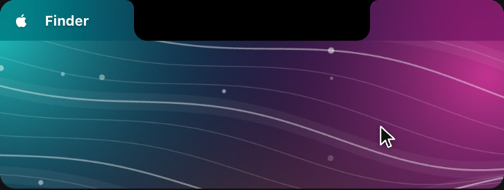
Resting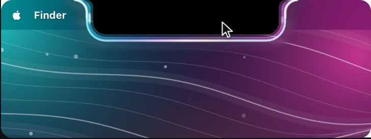
HoveredHover highlight · 12 options
Each card shows the same island twice: Resting (pointer elsewhere, pure black, the exact size of the camera notch) and Hovered (pointer on the notch, highlight fully on). Open a demo to see it move, open into the drawer, and close.
Pick one by number, for example “theme 4”.
The bubble and glass looks: a clear rim that bends and lights the wallpaper around the notch.
The notch swells slightly with a spring and grows a soap-bubble rim: a slowly turning rainbow sheen, bright shoulder highlights and bent wallpaper at the edge.

Resting
HoveredA 15 pt ring of frosted glass blooms around the notch: blurred wallpaper, a light white fill, fine grain and one soft pulse of light as the hover starts.
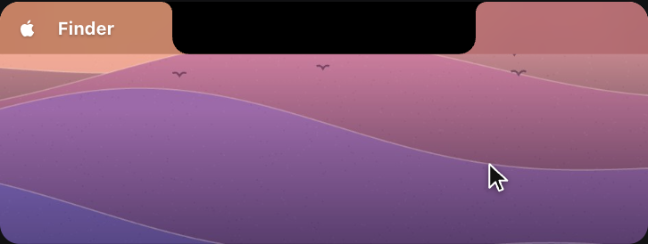
Resting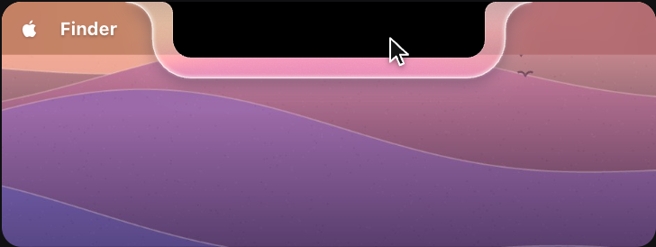
HoveredA single water drop rides the notch rim and follows the pointer. It magnifies the wallpaper upside down, and the wet rim is brightest next to it. The quietest glass option.
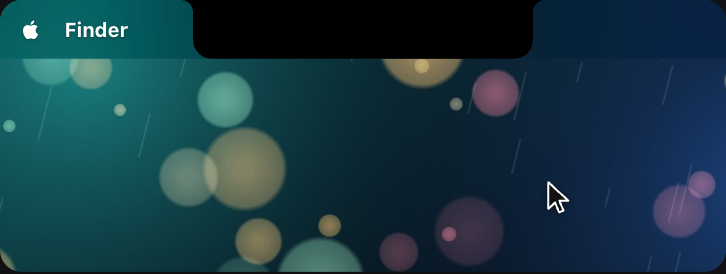
Resting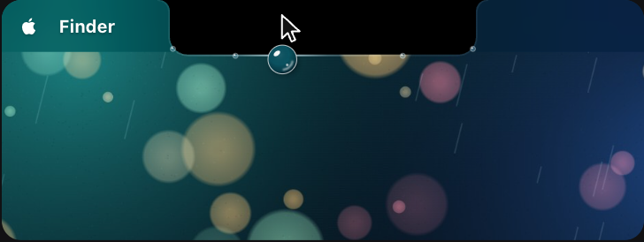
HoveredThe macOS 26 Liquid Glass look. Bottom corners round into a pill inside an 11 pt clear glass shell that bends the wallpaper, catches light on two edges and casts a soft shadow.
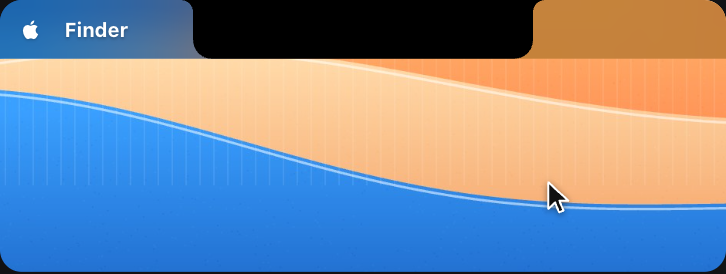
Resting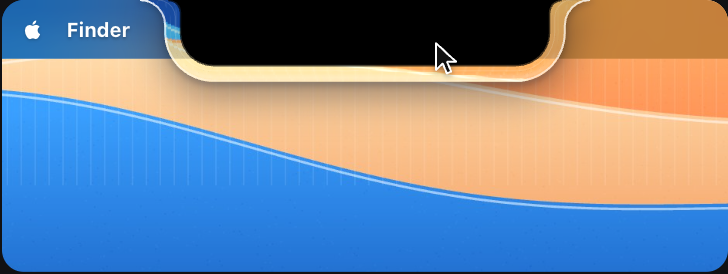
HoveredBrand-first borders in SparkV red #F01822: a line, a sweep, a pulse or a neon tube along the notch edge.
A thin signal-red rim draws itself from the bottom centre up both sides into the menu bar, with a soft red glow and a white-hot point at the bottom.
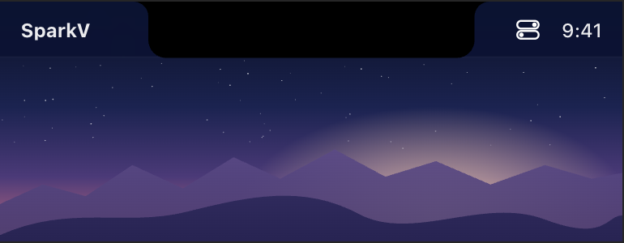
Resting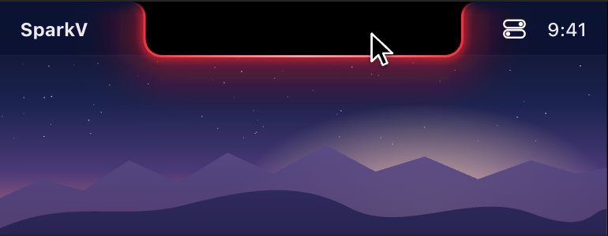
HoveredA red-to-white gradient border spins around the outline, with a white highlight passing about every 2.8 s over a blurred halo.
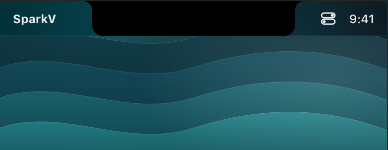
Resting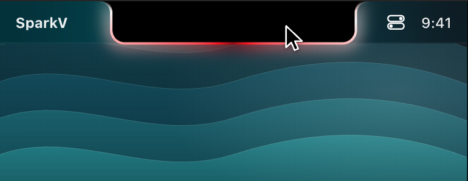
HoveredA heartbeat every 2.4 s: a red ring, then a white ring, spread outward from the edge while a glow swells behind the notch.
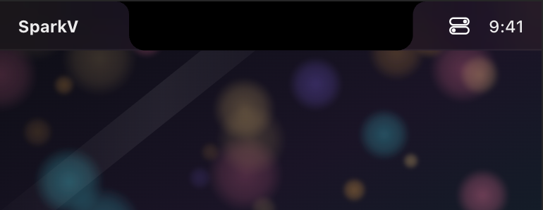
Resting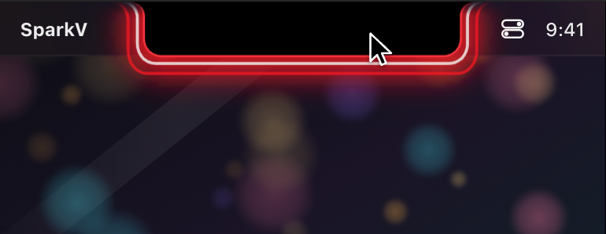
HoveredA red neon tube with a pink-white core flickers on like a real sign, then hums and throws red light onto the wall below. The boldest of the set.
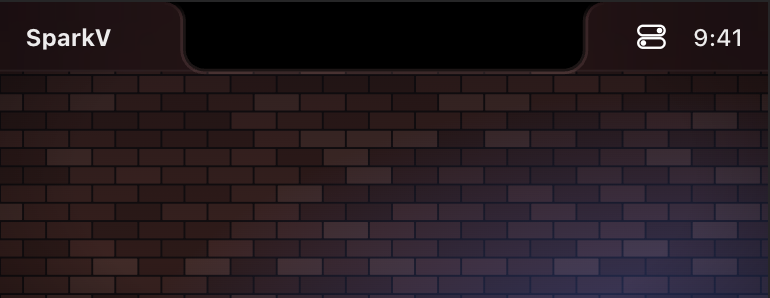
Resting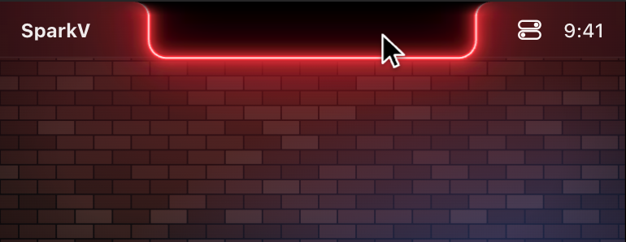
HoveredEffects that react to the pointer or add colour, plus one calm option for people who want almost nothing.
Glass rings with a red/cyan fringe spread from the pointer and bend the wallpaper and menu bar as they pass. The rim glows brightest under the pointer.
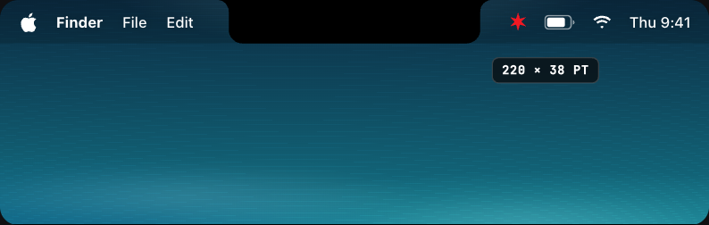
Resting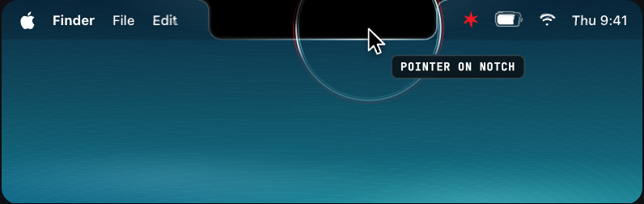
HoveredA blurred, slowly turning glow in red, magenta and deep blue behind the island edge, with a thin rim of moving colour.
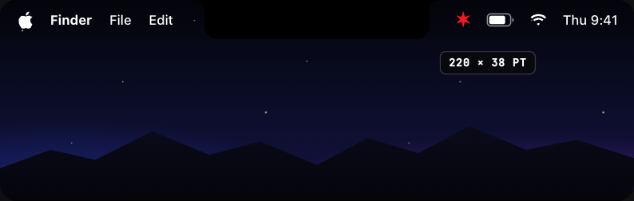
Resting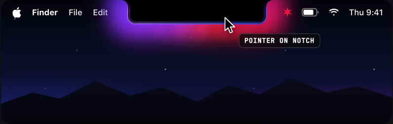
HoveredSixteen red sparks burst from the pointer and race around the outline both ways, with white-hot heads, short trails and falling embers.
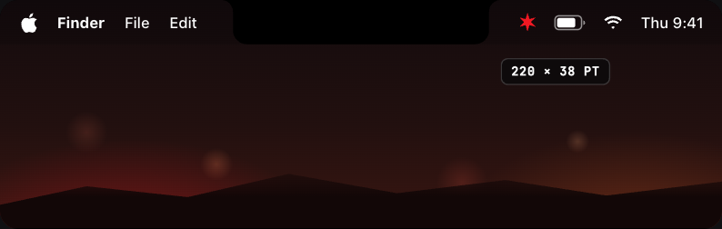
Resting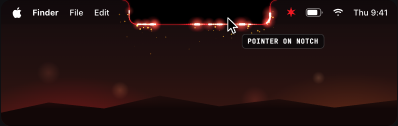
HoveredThe calm option: a 1 px white hairline fades in and a soft shadow lifts the island. One 200 ms fade, nothing running per frame.
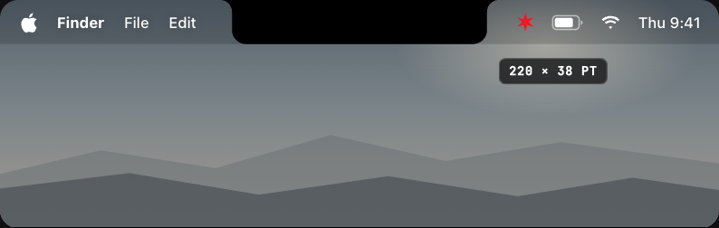
Resting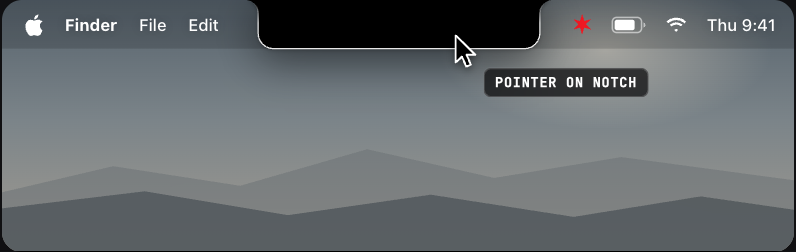
Hovered